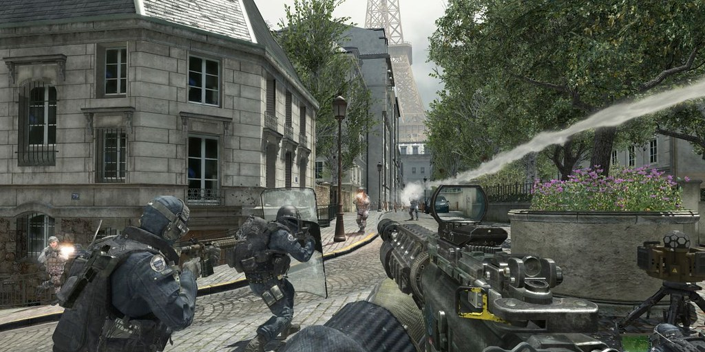
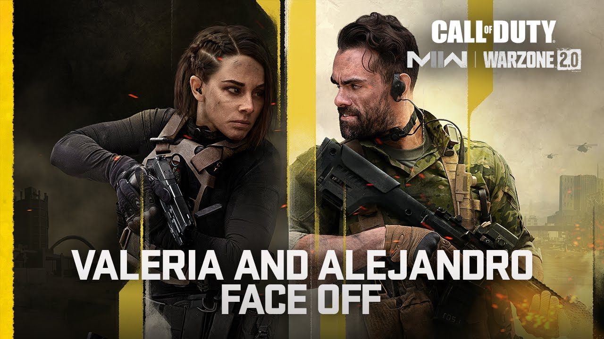

Gamer.nl: "Call of Duty biedt een meeslepende ervaring met een verbluffende grafische presentatie en dynamische gameplay."
Call Of Duty
Informatie
Synopsis: Duik in de intense wereld van Call of Duty, waar je wordt ondergedompeld in een meeslepende campagne vol actie en dramatische gebeurtenissen. Ervaar epische multiplayer-gevechten met diverse modi, maps, en wapens. Beleef adrenaline-pompende momenten zowel alleen als met vrienden in een voortdurend evoluerende oorlogservaring.
Genre: Actie / Shooter
Singleplayer/Multiplayer: Beide
Waardering (Metacritic): 90
Uitgever: Activision / Infinity Ward
Uitgavedatum: 28-10-2022
Game Screenshots
 Minimale Systeemeisen
- OS: Windows 10 64-bit1
- Processor: Intel Core i3-4340 or AMD FX-6300
- Geheugen: 8GB RAM
- Grafische kaart: NVIDIA GeForce GTX 670 / GeForce GTX 1650 or Radeon HD 7950
- DirectX: Versie 12
- Opslag: 149 GB beschikbaar
Recensies
Gamespot: "De nieuwste Call of Duty biedt veel vernieuwingen en blijft een topkeuze voor FPS-fans."
IGN: "Een solide toevoeging aan de serie, met enkele nieuwe functies die de gameplay verfrissen."